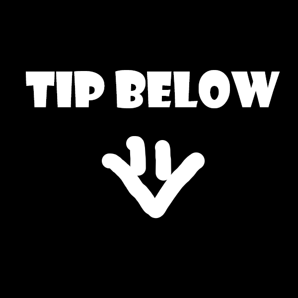

-
Month, Year here
Tips
Some items in the timeline are clickable, such as this to view more info.
-
May 2017
Lego Robotics @ WondersWork

My first Robotics lesson was when I was in Kindergarten 2. Although I don't remember much about the lesson, it kick-started my robotics and programming journey for the next 7 years.
-
December 2017
Lego Robotics @ Smart Science Lab

-
September 2018
Lego Robotics @ Bricks4Kidz

-
March 2020
Level 3 Lego Mindstorms NXT

I learnt how to do NXT for the first time.
-
July 2020
Virtual Robotics Competition
Best Programming
2nd Place
This was done virtually using the Virtual Robotics Toolkit app, where it simulates an EV3 Robot to complete missions. Its website is here.
I learnt to persevere on despite the countless unsuccessful, unpredictable runs I had. -
September 2020
Virtual Robotics Competition
Best Programming 2nd Place
Same thing here.
-
October 2020
Lego Mindstorms EV3
Basic Robotics Course
Learnt EV3 for the first time.
-
2020-2021
First Lego League (FLL) 2020/2021

My First First Lego League. To increase efficiency, our coach suggested we split into two groups and focus on different mission in different sections with two robots, which we did.
-
September 2021
Lego Robotics Grade 2
High Distinction
-
October 2021
IDE Robotics
2nd Place
My first IDE, I'm still proud of my robot.
-
October 2021
Lego Robotics Grade 3
High Distinction
-
December 2021
International Coding Showcase
Distinction & Most Creative

I created a maze generator using Python "Turtle" module as I was tired of redrawing mazes. I also used some "Pygame" module functions to save the image as .png file.
-
2021-2022
FLL 2021/2022

What I feel was the most challenging of all FLL's I have competed in. There were many different functions that the robot had to be able to perform, requiring many different attachments. It was also my first time teaming up with secondary school students and I learnt to hold my ground despite being younger than them.
-
December 2021
Arduino Microcontroller Grade 1
Distinction
-
March 2022
Arduino Microcontroller Grade 2
High Distinction
-
May 2022
IDE 2022 Code Builder Primary (Scratch)
Gold
This I have no regrets assuming I remember correctly and completed all challenges.
-
May 2022
IDE 2022 Code Hacker Secondary (Python)
Participation
No regrets too except that I wish I was more familiar with Python and had done Pygame before competing, which may have allowed me to perform better.
-
May 2022
IDE Robotics Primary Open
2nd Place
I had covid on the day of the run itself so I participated remotely online. Fortunately, our team had prepared sufficiently so we still managed to complete the missions.
-
August 2022
Coding Lab Python 3 Course

-
November 2022
Ai Tong School Fame Award for
Contribution in NRC & NRPC
I represented my school for 2 competitions. Going for the training sessions was something to look forward to in school.
-
November 2022
CCA Member of the Year

I was pleasantly surprised by this as I did not expect to be chosen.
-
December 2022
International Coding Showcase
Distinction & Most Creative
I created an "Item Locator" using Python "Pygame" module to help store the locations of items in your house or anywhere. You could search up the objects to see where they were.
-
2022-2023
First Lego League (FLL) 2022/2023

As this was my last time representing my school for competition, I was determined to do well. In the end the competition results were not as expected, however, I had tried my best.
-
May 2023
IDE Code Hacker Secondary (Python)
Participation 21st/62 participants
I think I did pretty well for my age, but I still wish I had done one thing: Prioritise the missions. Click to view more
-
May 2023
IDE Robotics 2023

As I reflected upon the competition, I realised that there was a way I could have improved my team's run results. The problem we were facing was when the robot had turned 180° at a junction, it would be misaligned with the line to linetrace on. When that happens, the robot would turn too sharply and get off-course. To counter this challenge, I had tried to turn the robot after the turn, but to no avail. The x-axis was still off. At that time, I could not think of how to solve it. However, now I think I could have overcome this obstacle by turning the robot right several degrees, move forward and turn left again. This way, its x-axis would have changed. I resolve to do better for my next competition.
-
May 2023
HwaChong Infocommunications Challenge (HCIC)
Platinum
I am most proud of this achievement as I had worked very hard for this.
-
June 2023
World Robot Olympiad (WRO)
Junior (Secondary) Category
- Still participatingDespite it being my PSLE preparation period, I find it energising to take part in this robotics competition. Besides, it keeps my skills up-to-date.